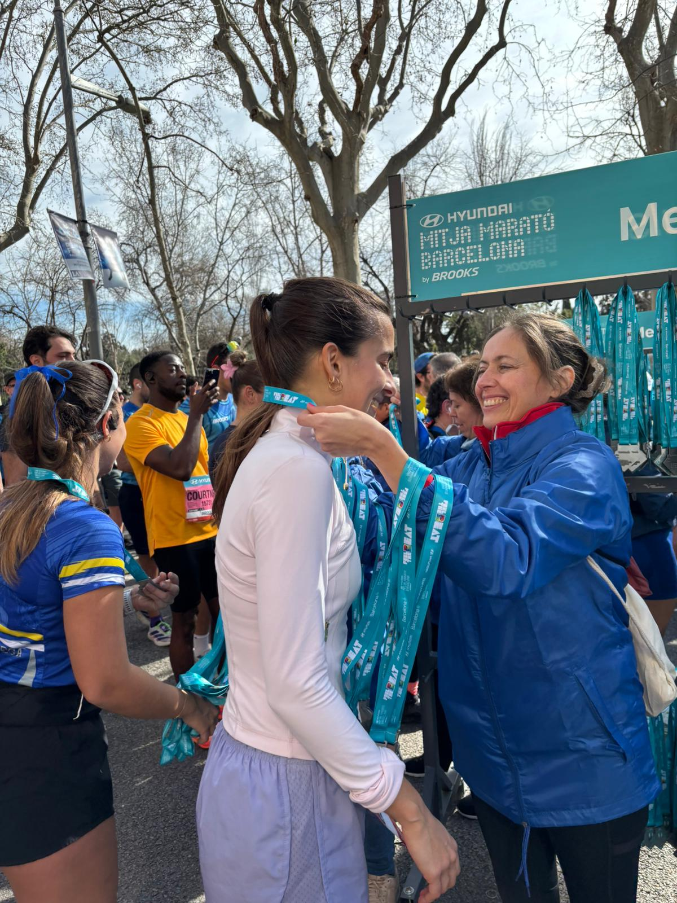

ALÍCIA
Mathematician who wanted to solve hard problems and somehow ended up training LLMs on a supercomputer.
love running, swimming, tennis, padel, meditation, futbol, and hate the gym.
very organized and love taking care of details. Experienced in creating Notion docs that can either end up organizing the whole company or converted into ghost towns. Learnt the hard way that researchers don't like Agile methodologies but still having faith in tricking them.
in love with simple clean softwares.




Background
AI/ML Research Engineer, Barcelona Supercomputing Center
☆ Part of the LLMs team in the Earth Sciences department (we are 3!)
☆ Developed the Earth Sciences department internal chatbot. Still sweating with the deployment and serving.
☆ Finetuned & evaluated llms for better climate knowledge.
☆ Colaborated in Climsight sowftware tool integration with open source models.
☆ Attended the HPC international summer school in australia and my new passion is gpu optimization.
Data Scientist, Centre de Telecomunicacions i Tecnologies de la Informació
☆ Part of the new, young and highly motivated team to integrate AI and data analysis to public departments. Àrea de Dades i IA.
☆ Worked on demand ML projects involving: knowledge graphs, random forest, arima models, like #LesMevesRegles stock prediction.
☆ Got interested on the emerging of gpt and llms and my interest (and the demand) made me switch to llm focused.
☆ Master thesis in collaboration with CTTI. Developed a multi-agent system to facilitate administrative procedures for young entrepreneurs. 🔗
M.S. in Data Science, Universitat Politècnica de Catalunya
☆ Scholarship recipient, Allianz Technology.
B.S. in Mathematics, Universitat Autònoma de Barcelona
☆ Erasmus in University of Glasgow.